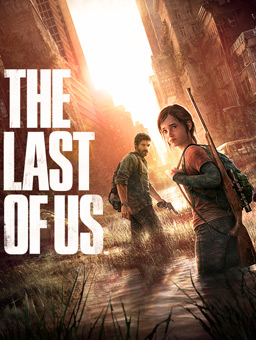

The Last of Us is a third-person action-adventure survival horror video game created exclusively for
PlayStation 3, and was later remastered for the PlayStation 4. The game was developed by a portion of the
employees at Naughty Dog, while the other half of the company went to develop Uncharted 3: Drake's
Deception; established for the purpose of creating new intellectual property as well as continuing the
Uncharted series simultaneously.
Set in the post-apocalyptic United States, the game tells the story of survivors Joel and Ellie as they work
together to survive their westward journey across what remains of the country to find a possible cure for
the modern fungal plague that has nearly decimated the entire human race.

On May 15, 2013, The Last of Us had "gone gold", meaning all development of the game had been completed
and mass manufacturing had begun. The Last of Us was scheduled to be released on May 7, 2013, but was pushed
back to six weeks. The game was released on June 14, 2013 in all countries except Japan where it was
released on June 20, 2013.
On March 26, 2014, according to an interview with a Turkish Sony representative, Sercan Sulun, a PlayStation
4 version of the game, titled The Last of Us Remastered, would be released in the summer of 2014. Upon
release physically and digitally on July 29 and 30 that year, this version of The Last of Us came with
"enhanced graphics" and included the DLC, Left Behind. A sequel, titled The Last of Us Part II, was
revealed in December 2016 during the PlayStation Experience event and released in 2020. In September
2022, Naughty Dog, in collaboration with PlayStation Studios, released a remake of the original game with
Left Behind, titled The Last of Us Part I, for the PlayStation 5 and Microsoft Windows.